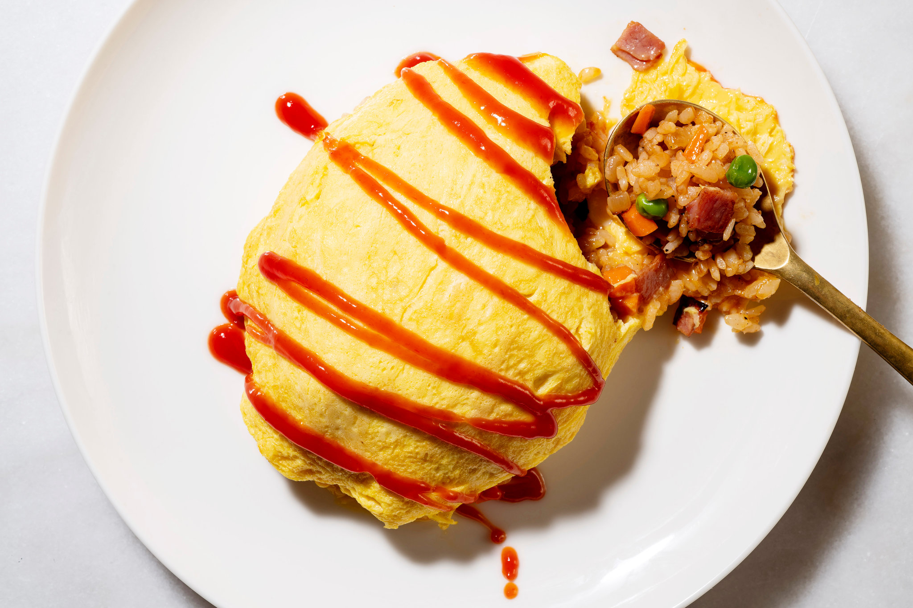
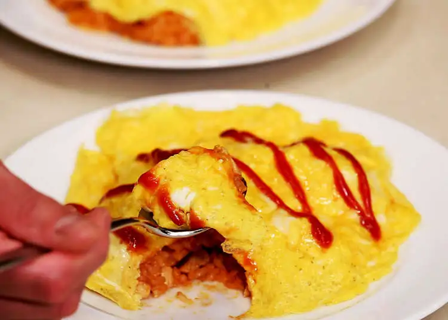
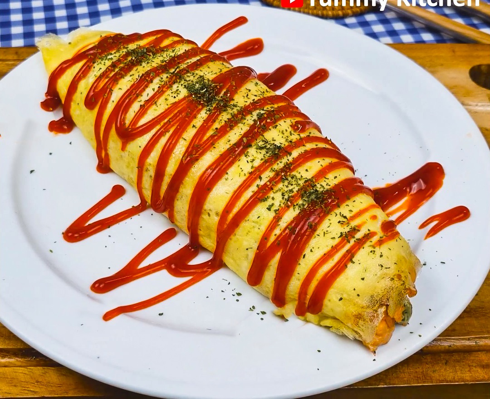
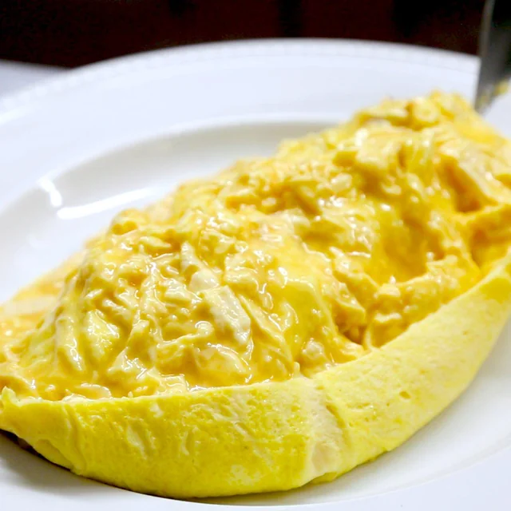

O que é Omurice?
Omurice é um prato da culinária japonesa que consiste em arroz frito envolto em uma camada de ovo.
Por que é especial?
A combinação do arroz temperado com ketchup e o ovo cria uma experiência única de sabores.
Popular no Japão
Muito popular em restaurantes de estilo ocidental no Japão.
Galeria de Omurice

Omurice Clássico

Omurice Decorado

Omurice Cremoso